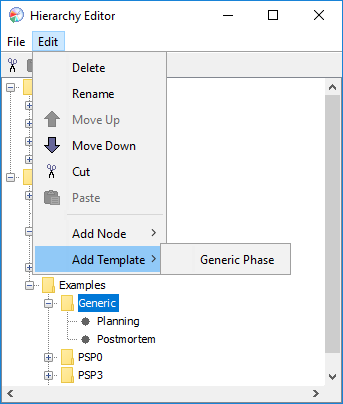

Building upon the flexibility of the world-wide-web, the dashboard displays many scripts, forms, and reports in your web browser. See the Installation help topic for more info about which web browsers are supported and how to install them if necessary.
The connection between the dashboard and the browser is facilitated by a very small web server that is running within the dashboard. It is this web server, combined with some Java scripting, that provides all the live data communication between the dashboard and the browser. One consequence of this is that the various reports and charts that are displayed within the browser will not be available unless the dashboard is running.
An add-on module for the Process Dashboard provides nearly all the scripts defined in the book A Self-Improvement Process for Software Engineers by Watts Humphrey.
An add-on module for the Process Dashboard is available that provides nearly all the scripts defined in the book A Self-Improvement Process for Software Engineers by Watts Humphrey. However, you have not installed that module. If you would like to use the scripts listed below, click here for installation instructions.
The PSP forms and scripts in this add-on module are designed to be as close to the "real thing" as possible (the "real thing" being the forms and tables in Watts Humphrey's book). Where the online forms and scripts deviate, the text is color coded as follows:
Many of the process forms contain links to other forms that are used at that process level, making navigation through the forms simple and intuitive. Also, many of the process scripts contain little stopwatch icons on them. These icons provide another way to navigate and time a process phase. When you click on one of these icons, the current phase being measured will change to the phase indicated by the icon and the timer will start measuring time for that phase.
For information on how to access the forms, see the Accessing process scripts help topic.
The following lists detail the forms and scripts provided by the dashboard at each PSP level. Items marked by * are "live" forms that either update themselves with process data (e.g. the project summary forms) or can be expanded as necessary to permit multiple data entry (e.g. the size estimating template or the PSP3 cycle summary form).
At PSP0:Very much of the methodology that is employed by the PSP can be used in other endeavors. Any kind of work that has measurable time, size, and/or defects can probably benefit from a PSP-like process. The generic process template gives estimation, measurement, and defect tracking support for other work efforts.
When you create a project based on the generic process in the hierarchy editor, it will initially contain only a planning phase and a postmortem phase. You can then add additional phases (and give them any names that you want) by selecting the node corresponding to the generic project, then selecting "Generic Phase" from the "Add Template" menu:

The generic process then creates a tailored project plan summary form. It allows entry of time and size estimates, and even lets you enter the unit of size measurement. For example, you could run the generic process to measure and track your progress as you write a technical paper. The size unit would end up being something related to the work of writing (perhaps pages). The generic process would capture your productivity rates and allow you to enter defects. If you have installed the add-on with PSP process materials, the Size Estimating Template and PROBE Wizard will also be available to provide support for the estimation process.
The timer process allows for estimating and measuring activities that have only a time aspect to them. If you regularly perform some kind of task that pretty much remains the same each time, you could record estimates and times for that task to attempt to provide some engineering discipline.
The dashboard has been designed from the ground up to support custom processes. The PSP scripts and forms that you see are not hard-coded into the tool; instead, they are dynamically loaded from simple HTML and text files. Thus, it is possible to create your own custom process scripts, forms, and data that will be dynamically integrated into the dashboard.
More information on creating custom processes is available in the Advanced Topics section of the help.
When should you use the generic process, and when should you create a custom process? In general, you should use the generic process:
The generic script gives you a lot of flexibility - the phase names and other process specifics can change from task to task, or even in the middle of a generic project! This flexibility comes at a price, however: without an unchanging process definition, it isn't possible to compare "apples to apples" across numerous generic processes. Therefore, the generic process cannot calculate "to date" data like a custom process can. On the other hand, a change to your process definition can potentially invalidate all the historical data you've collected, so it is best to wait and define a custom process when you feel you've confidently identified its phases.
The dashboard also includes a sophisticated metrics collection framework designed to support team projects. The team project template allows you and your teammates the ability to define arbitrary hierarchial structures of project subcomponents and tasks. It makes it easy to allocate and reassign work between team members, and it automatically rolls up individual data to the team level. If you plan to collaborate with other individuals, you should use the team process.
For more information on the team project support, see the Team Use section of the Users Manual.